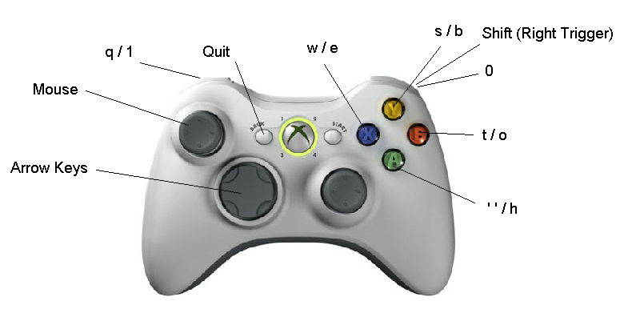

XBox 360 Notes
- The Xbox 360
version of the SDK uses static libraries, unlike the Win32 version
which uses DLLs. The library files are located in lib\xbox360.
The Xbox installer includes
Release and
Release_LTCG (Link Time Code Generation) versions of the libraries.
- Building
with the Xbox 360 version of the library requires that the preprocessor
define
NX_USE_SDK_STATICLIBS for your project.
- All of the sample programs (excluding fluids) have been ported to
the Xbox 360. However they make use of a OpenGL emulation layer on top
of Direct3D. Hence there may be some graphical differences. In addition
there is a significant performance overhead for graphics intense
samples.
- For some samples(eg SampleThreading and SampleCloth) it may be
necessary to copy media files to the d:] drive / Sample directory.
- When connecting to the Visual Remote Debugger from an Xbox 360, you need to specify
the IP address of the computer running the VRD in the NxRemoteDebugger::connect() call
(rather than "localhost").
Also, you need to take care that the Xbox 360 network libraries you use allow
for connecting to PCs in order to use the VRD.
- Input is handled either through a USB keyboard attached to the
Xbox 360 or the controller. The left thumb stick provides mouse input
and the controller buttons are mapped to a selection of keys.

Certain of the samples depart from this general control scheme:
-
SampleAssetExport: The left shoulder button saves the scene, right shoulder
clears the scene, and shift+left shoulder loads a saved scene.
-
SampleCCDDynamic: A creates a big box stack. Left shoulder toggles CCD,
right shoulder resets the scene.
-
SampleCCDExplosion: A explodes the stack. B toggles CCD,
right shoulder resets the scene.
-
SampleCharacterController: Left and right shoulders reset the scene and the character,
respectively. A jumps, B creates a cube, X a capsule and Y a sphere. Shift + B
creates a tower of boxes. Shift+A toggles gravity application, Shift+X switches
controlled character.
-
SampleContactStreamIterator: The right shoulder button toggles display of normals.
-
SampleConvex: A spawns a convex actor.
-
SampleD6Joint: The D-pad and shoulder buttons control forces. When
Shift is depressed, they control the camera. A selects the next actor,
Shift+A toggles joint lock, and B,X and Y (and shift) controls joint motion.
Shift+right shoulder resets the scene and shift+left shoulder selects the force mode.
-
SampleHeightfield: A spawns spheres, B capsules, X boxes and Y convexes, and
the right shoulder button resets the scene.
-
SampleMaterials: A shoots a box. B, X, and Y (with shift) drops boxes in different
places.
-
SamplePulleyJoint: The D-pad and shoulder buttons control forces. When
Shift is depressed, they control the camera. B, X and Y control
the joint motor. With Shift depressed, A toggles shadows, B selects actor,
X selects force mode and Y toggles wireframe display.
-
SampleRaycastCar: A shoots boxes, B toggles debug rendering, X toggles free flight,
Y switches active cars, and the right shoulder button flips the car upright.
-
SampleSceneExport: The left shoulder button saves the scene, right shoulder
clears the scene, and shift+left shoulder loads a saved scene.
-
SampleTrigger: A shoots a dynamic cube, B a kinematic cube, X a dynamic trigger
and Y a kinematic trigger.
Copyright © 2006 Ageia Technologies Inc, Suite 118, 82 Pioneer
Way, Mountain View, Ca 94041 U.S.A. All rights reserved. www.ageia.com